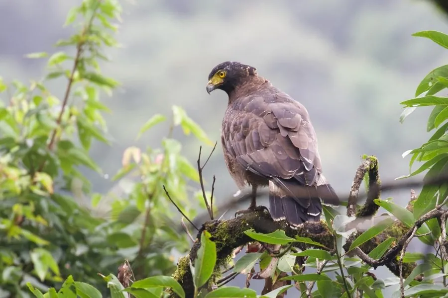

鸟类 · 动物界
蛇雕 Spilornis cheela

南亚和东南亚的猛禽，头后有黑色冠羽、飞行时翼下有明显黑白横带，擅长捕食蛇类，也吃蜥蜴和蛙。
- 分类
- 门脊索动物门纲鸟纲目鹰形目科鹰科属蛇雕属
- 栖息环境
- 低山森林、林缘、农田与稀树草原
- 地理分布
- 南亚、东南亚及中国南方
- 保护级别
- IUCN 无危（LC）；中国国家二级保护动物
物种志
蛇雕体长 50–74 厘米，翼展 110–160 厘米，体重 1–2.5 千克。它的头顶黑色，枕部有蓬松的黑色冠羽，眼周和蜡膜黄色；背面深褐色，腹面浅褐带斑点，飞行时翼下有宽阔的黑白横带，尾羽有横斑。
蛇雕分布于南亚、东南亚和中国南方，栖息在低山森林、林缘、农田和稀树草原。它以蛇类为主食，也捕食蜥蜴、蛙、鸟类和小型哺乳动物，捕蛇时会用脚爪踩住蛇头，避免被毒蛇咬伤。蛇雕常在上升气流中盘旋，发出响亮的哨音。蛇雕的跗跖粗壮、爪尖锐，能牢牢控制滑溜的蛇身。雌鸟每窝产 1 枚卵，孵化约 35–40 天。蛇雕种群总体稳定，被列为无危，在中国属于国家二级保护动物。
形态与习性
- 食性蛇类、蜥蜴、蛙与小型动物
- 体长50–74 cm
- 翼展110–160 cm
- 体重1–2.5 kg
- 繁殖每窝 1 枚卵，孵化约 35–40 天
- 特征枕部有黑色冠羽，翼下有黑白横带
趣味知识
- 蛇雕以蛇类为主食，捕蛇时会用脚踩住蛇头。
- 它飞行时翼下有宽阔的黑白横带，很容易识别。
- 蛇雕在中国属于国家二级保护动物。